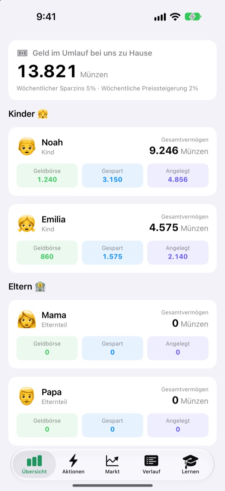
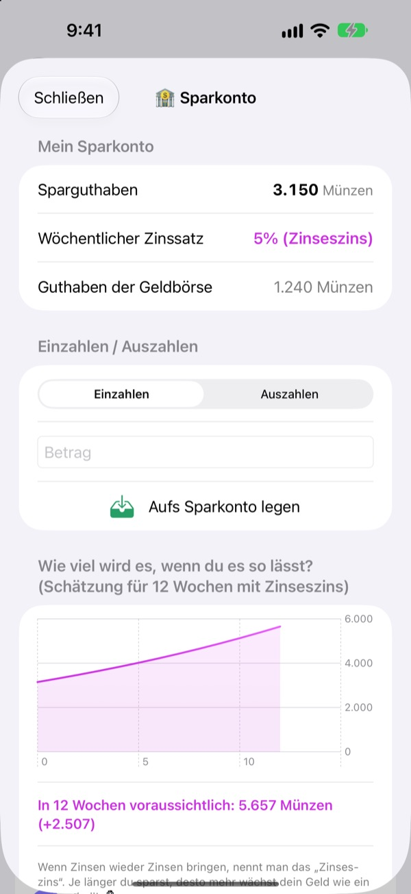
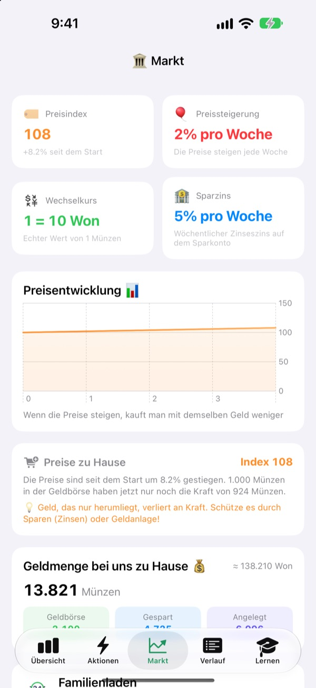
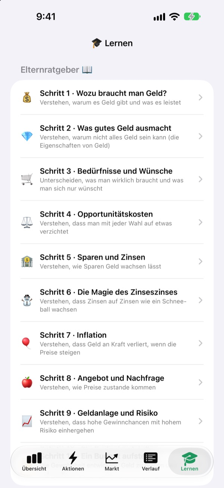

Aus dem Taschengeldtag
wird eine Geldstunde
Du bist die Zentralbank der Familie, deine Kinder sind die Kundschaft. Sie bekommen ihr Taschengeld in eurer eigenen Währung, kaufen sich Snacks, sehen Zinsen auf ihrem Ersparten landen und erleben das Auf und Ab eines Übungsfonds.
Alle Funktionen sind kostenlos. Echtes Geld fließt nie.

Wohin mit 1.000 Münzen?
Dieselben 1.000 Münzen liegen in der Geldbörse, auf dem Sparkonto und in drei Fonds. Spring Woche für Woche weiter und sieh zu, was jeweils passiert. Es gelten dieselben Regeln wie in der App.
„Spar es, dann wird es mehr.“ Kommt das bei Kindern wirklich an?
Zinsen, Zinseszins, Inflation: Je mehr man erklärt, desto weiter weg klingt es. In SukSuk Taschengeld verdienen, verbrauchen und warten Kinder selbst. Sobald sie entdecken, dass auf dem Ersparten von letzter Woche Zinsen liegen, wandert das nächste Taschengeld direkt aufs Sparkonto.
Geduld zahlt sich sichtbar aus
Geld auf dem Sparkonto bekommt jede Woche Zinseszins. Den Zinssatz legst du fest, und ein Diagramm zeigt, wie viel es in 12 Wochen ist, wenn es liegen bleibt.
Ein paar Tage nicht reingeschaut? Beim nächsten Öffnen werden alle offenen Wochen auf einmal gutgeschrieben.

Sehen, wie Preise die Geldbörse leeren
Der Tab Markt zeigt Preisindex, Inflationsrate, Zinssatz, Geldmenge und Fondspreise eurer Familie auf einem Bildschirm. Steigen die Preise, sieht man, wie viel weniger 1.000 Münzen in der Geldbörse noch kaufen.
Kinder erkennen an klaren Zahlen: Herumliegendes Geld schrumpft, gespartes oder angelegtes Geld hält seinen Wert.

Zehn Gespräche für euch beide
Der Elternratgeber führt in zehn Schritten durch die Themen: wozu wir Geld brauchen, Bedürfnisse und Wünsche, Opportunitätskosten, Sparen und Zinsen, Zinseszins, Inflation, Anlegen und Risiko und schließlich ein eigenes Budget.
Mit einem Zinseszins-Rechner und einem Preis-Experiment-Rechner verändert ihr Zahlen und seht sofort, was passiert.

In drei Schritten startklar
- 1
Währung benennen
Bohnen, Sterne, Münzen: Wie eure Familie sie nennen will.
- 2
Eltern-PIN festlegen
Vier Ziffern. Nur wer sie kennt, kann Taschengeld geben oder die Bank-Einstellungen ändern.
- 3
Familie hinzufügen
Kinder und Eltern eintragen, das erste Taschengeld auszahlen, los geht’s.
Was ist wo?
- Übersicht
- Geldbörse, Erspartes und Anlagen aller Familienmitglieder auf einen Blick
- Aktionen
- Taschengeld geben oder abziehen, Artikel-Barcode, Artikel hinzufügen, Kind einladen, Kinderhandy-Modus, Bank-Einstellungen (Eltern-PIN nötig)
- Markt
- Preisindex, Inflationsrate, Wechselkurs, Sparzins, Geldmenge, Fondspreise
- Verlauf
- Jede Geldbewegung nach Datum, Person oder Art
- Lernen
- Elternratgeber in zehn Schritten, Zinseszins-Rechner, Preis-Experiment-Rechner
- 🐢 Schildkröten-Sicherfonds
- Kleine tägliche Schwankungen, steigt langsam und stetig
- 🐰 Hasen-Wachstumsaktie
- Mal rauf, mal runter, aber sie wächst
- 🚀 Raketen-Abenteueraktie
- Kann abheben, kann abstürzen
Zum Start gelten 5 % Sparzins und 2 % Inflation pro Woche. Beides änderst du im Elternmodus unter Bank-Einstellungen. Bei 0 % Inflation bleiben die Preise gleich.
Alle Funktionen kostenlos
Kostenlos
- Eure eigene Familienwährung und ein mit PIN gesicherter Elternmodus
- Taschengeld geben und abziehen, Familienladen und Bezahlen per Barcode
- Ein Sparkonto mit wöchentlichem Zinseszins
- Drei Übungsfonds mit Renditediagrammen
- Der Tab Markt und ein Verlauf aller Buchungen nach Datum
- Der Elternratgeber in zehn Schritten und zwei Rechner
- Kinderhandy-Modus und iCloud-Synchronisierung
Entwickler unterstützen
- Im Elternmodus unter Bank-Einstellungen ein kleines Trinkgeld in beliebiger Höhe geben
- Trinkgeld schaltet nichts frei. Die App funktioniert genau gleich
Keine Werbung, kein Abo. Der Trinkgeld-Button steckt nur im Elternmodus, deine Kinder sehen also nie einen Kaufen-Button.
Häufige Fragen
Ist echtes Geld im Spiel?
Nein. Die Währung und alle Buchungen in der App sind nur gespielt und dienen dem Lernen. Es gibt keine Verbindung zu einem echten Bankkonto, einer Karte oder Bargeld.
Wie sehen wir dieselben Konten auf dem Handy meines Kindes?
Geräte mit demselben iCloud-Account gleichen das Familienbuch automatisch ab. Prüfe unter Einstellungen > Apple Account > iCloud, ob iCloud eingeschaltet ist. Im Tab Aktionen kannst du unter Kind einladen eine QR-Einladung erstellen, die dein Kind mit der Kamera scannt. Ohne iCloud bleiben die Daten nur auf diesem einen Gerät.
Was ist der Kinderhandy-Modus?
Er macht das Handy deines Kindes zu einem Bildschirm nur für es. Es sieht nur die eigene Geldbörse, Anlagen, den Verlauf und die Lektionen, und zum Verlassen braucht es die Eltern-PIN.
Ich habe die Eltern-PIN vergessen.
Die PIN ist nur auf dem Gerät gespeichert, nicht einmal der Entwickler kann sie wiederherstellen. Wenn du die App löschst und neu installierst, kannst du sie neu einrichten. Dabei werden aber auch eure bisherigen Daten gelöscht.
Wie funktionieren die Sparzinsen?
Jede Woche kommt automatisch Zinseszins auf das Ersparte. Den Zinssatz legst du im Elternmodus fest, und verpasste Wochen werden beim nächsten Öffnen der App verrechnet.
Hängen die Fondspreise am echten Markt?
Nein. Die Fondspreise sind Übungsdaten, die sich in der App einmal am Tag ändern. Je riskanter der Fonds, desto stärker die Schwankungen. Es sind keine echten Finanzprodukte.
Warum steigen die Preise?
Damit Kinder Inflation spüren, steigt euer Familien-Preisindex jede Woche ein wenig. Die Rate änderst du im Elternmodus unter Bank-Einstellungen, mit 0 % schaltest du sie ab. Wenn du die Preise für Snacks und Spielzeug im Familienladen passend etwas anhebst, bleibt die Lektion besser hängen.
Wie lösche ich alles?
Wenn du die App löschst, verschwinden die Daten auf dem Gerät. Für Daten in iCloud gehst du zu Einstellungen > Apple Account > iCloud > Speicher verwalten und löschst dort die Daten der App.
Werden Daten meiner Familie irgendwohin gesendet?
Nein. Es gibt keine Registrierung, alle Daten bleiben auf deinem Gerät und in deinem eigenen iCloud-Account. Der Entwickler bekommt nur Feedback, das du selbst aus dem Elternmodus schickst, sowie anonyme Nutzungsstatistiken und Absturzberichte.
Auf welchen Geräten läuft die App?
Auf dem iPhone mit iOS 17.0 oder neuer.
Fragen, Fehler oder Ideen? Schreib an leeo@kakao.com. Mit Gerätemodell und iOS-Version können wir dir schneller helfen.